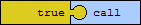
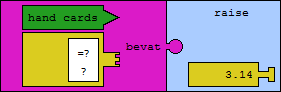
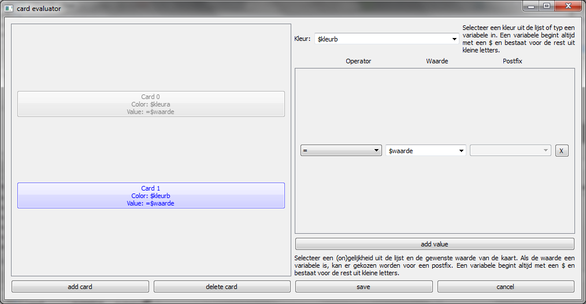
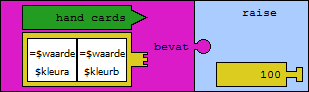

Een call bot doorsturen
- Vul in het welkomsvenster jouw naam en de naam van de tafel in.
- Aan de linkerkant zie je de elementen waarmee je een pokerbot kan maken. In het midden moeten de regels van de pokerbot komen. Aan de rechterkant zie je een visualisatie hoe goed de pokerbots het doen.
- Aan de linkerkant onder het kopje "acties" staat de tekst "call". Sleep deze tekst naar de eerste regel van de pokerbot.
- Onder het kopje "constanten" staat de tekst "true". Sleep deze tekst in de call. Je zou nu de volgende regel moeten hebben.

- Exporteer de code door in het menu op "exporteren" te klikken en dan de juiste tafel te kiezen.
- Als er geen fouten zijn gebeurd, zou er een venster moeten verschijnen dat alles goed is verlopen anders wordt er getoond welke fout er gebeurd is.
Een bot maken die raist als hij een paar heeft
- Sleep raise naar het regelgedeelte.
- Sleep 3.14 in de raise.
- Sleep bevat in de raise.
- Sleep handkaarten in bevat.
- Sleep kaartvergelijking in bevat.

- Dubbelklik op 3.14
- Er verschijnt een venster waar je het gewenste raisebedrag kan instellen
- Dubbelklik op de kaartvergelijking
- In het venster dat nu verschijnt klik je op "voeg kaart toe". Aan de linkerkant zie je nu twee knoppen. Dit zijn de twee kaarten van het paar.
- Selecteer "Kaart 0", kies als kleur "$kleura" en als waarde kies je "$waarde"
- Selecteer "Kaart 1", kies als kleur "$kleurb" en als waarde kies je "$waarde"
- Je hebt dus nu twee kaarten die een verschillend kleur moeten hebben maar die éénzelfde waarde hebben. Onderstaande afbeelding geeft een idee hoe het venster er zou moeten uitzien. 
- Druk nu op "opslaan".
- Als alles goed ingevuld was zou het programma moeten terugkeren naar het hoofdvenster. Je hebt nu een bot die raist wanneer hij een paar in zijn handen heeft. De regel zou er moeten uitzien zoals op de onderstaande
afbeelding.
